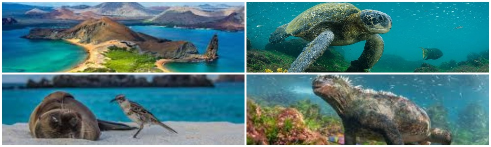

The Galápagos Islands (official name: Archipiélago de Colón, other Spanish name: Las Islas Galápagos, Spanish pronunciation: [las ˈislas ɣaˈlapaɣos], local pronunciation: [laz ˈihlah ɣaˈlapaɣoh]), part of the Republic of Ecuador, are an archipelago of volcanic islands distributed on either side of the equator in the Pacific Ocean surrounding the centre of the Western Hemisphere, 906 km (563 mi) west of continental Ecuador. The islands are known for their large number of endemic species and were studied by Charles Darwin during the second voyage of HMS Beagle. His observations and collections contributed to the inception of Darwin's theory of evolution by means of natural selection. The Galápagos Islands and their surrounding waters form the Galápagos Province of Ecuador, the Galápagos National Park, and the Galápagos Marine Reserve. The principal language on the islands is Spanish. The islands have a population of slightly over 25,000. The first recorded visit to the islands happened by chance in 1535, when Fray Tomás de Berlanga, the Bishop of Panamá, was surprised with this undiscovered land during a voyage to Peru to arbitrate in a dispute between Francisco Pizarro and Diego de Almagro. De Berlanga eventually returned to the Spanish Empire and described the conditions of the islands and the animals that inhabited them. The group of islands was shown and named in Abraham Ortelius's atlas published in 1570. The first crude map of the islands was made in 1684 by the buccaneer Ambrose Cowley, who named the individual islands after some of his fellow pirates or after British royalty and noblemen. These names were used in the authoritative navigation charts of the islands prepared during the Beagle survey under captain Robert FitzRoy, and in Darwin's popular book The Voyage of the Beagle. The new Republic of Ecuador took the islands from Spanish ownership in 1832, and subsequently gave them official Spanish names. The older names remained in use in English-language publications, including Herman Melville's The Encantadas of 1854.
